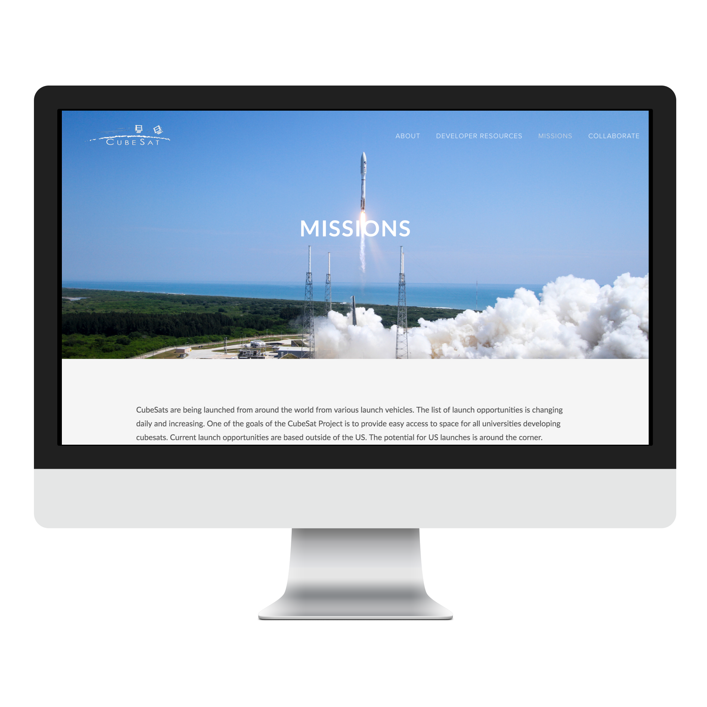
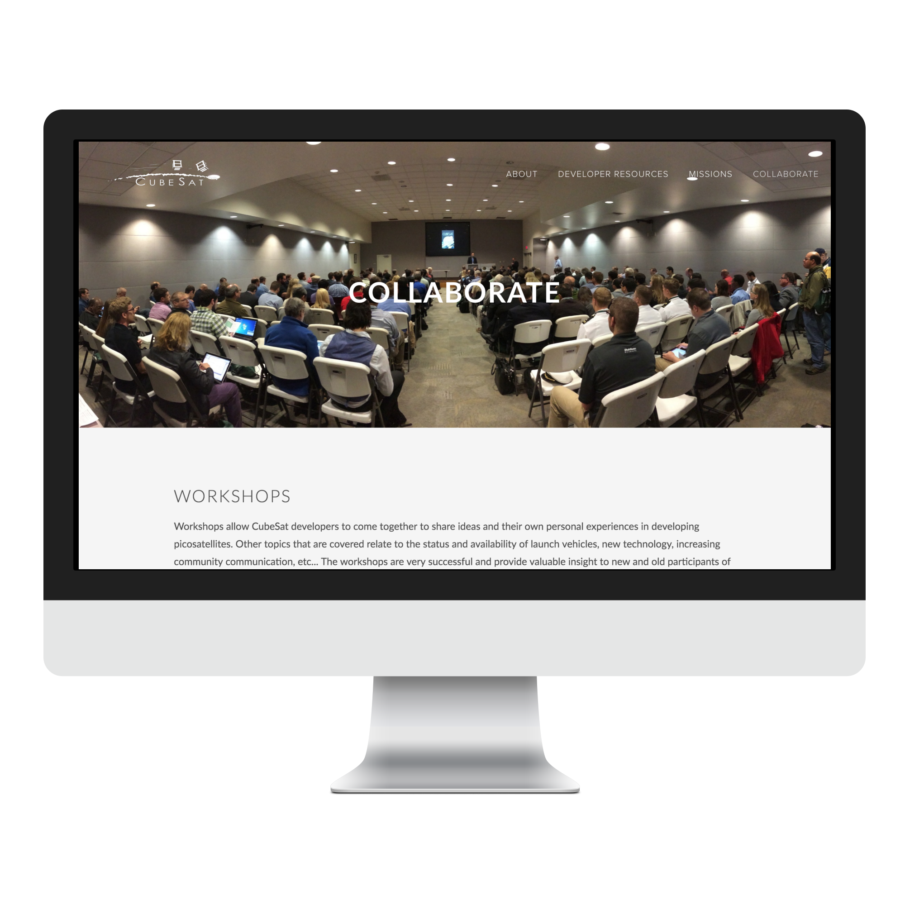

CubeSat
One of the projects I completed as a Web and Graphic Designer at PolySat was to completely redesign CubeSat's website and make it more accessible, user friendly, and organized.
The CubeSat Program was developed by California Polytechnic State University and Stanford University as a way to assist businesses and universities in flying payloads in space, providing a standard, flight proven deployment system, and is part of the NASA CubeSat Launch Initiative. I have also recently finished designing PolySat's website, feel free to check it out.
Challenges:
• Perspective: empathize with user in an environment with many external factors
• Hierarchy of information: organizing it in a way that is efficient and clean.
• Create a long lasting and flexible design based on one set of users: CubeSat developers/CubeSat community
Project Constraints:
• Visually, the goal is to be as simple and clean /as possible/. So, graphic design was out the window here.
• Limited user testing: project specific
• Feedback from a design perspective.
• Limited resources: I am the only UI/UX designer on the team.
• Time was of essence here. We felt that the more design iterations = more indecisiveness and potential for eventual miscommunication.
The Requirements:
After some research on my end (as a non-CubeSat developer), the CubeSat program managers and I came together to decide which functions and features would be vital for a minimum viable website that is useful and most beneficial to users.
Function:
Clearly lay out the resources available for website visitors/CubeSat developers looking for a specific file or CubeSat standard requirement.
Features:
• About - What IS the CubeSat Program? This was to be told in a non-technical definition so it could easily be understood by any average website visitor. The CubeSat Standard is to: facilitate frequent and affordable access to space with launch opportunities available on most launch vehicles.
• Developer Resources - CubeSat Information/Testing Information/Regulatory Information regarding Design Specifications, Checklists, Drawings, User Guide's, NASA Verification Standard, and other regulatory information such as FCC Guidance on Small Sats, FCC Amateur Radio, Regulations, ITU Amateur Satellite Service. List of Suppliers as well!
• Missions - organized database list of past launched missions and their respective launch information. Sorted by Year.
• Collaborate - Interactive map of CubeSat world map, clear and easy access to mailing list and contact information.
• Upcoming events, CubeSat Developer Workshop information - home page priority.



